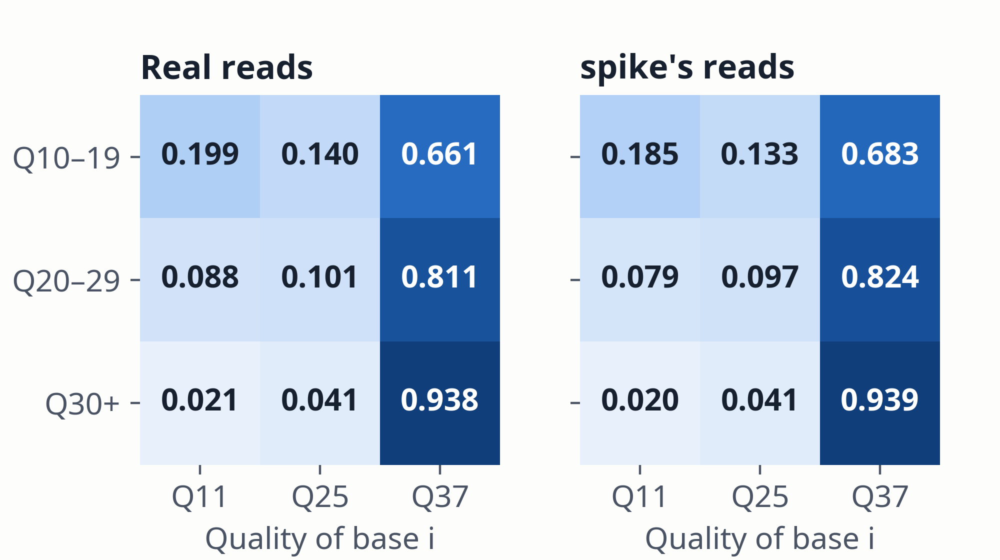

The quality of base i is drawn from the observed qualities in the most specific bin holding ≥ 30 observations:
i: cycle; b(i): base; B bins the previous quality: Q0–9, 10–19, 20–29, ≥ 30. Estimated per mate from the donor pool; a draw is a resampled observed value. Bins with ≥ 30 observations in the example run: level 1, 3,167 of 4,832; level 2, 900 of 1,208; level 3, 1,208 of 1,208.

Figure 5. One-step transition probabilities, pooled over cycles and both mates, in the 25 windows of the SNV run: real reads (n = 23,832) and spike's reads (n = 13,016). This library has three quality values. Overall 2.9% of real bases are Q11; after a Q10–19 base, 19.9% are (spike: 2.7% and 18.5%).
spike · Methods · 10 / 25